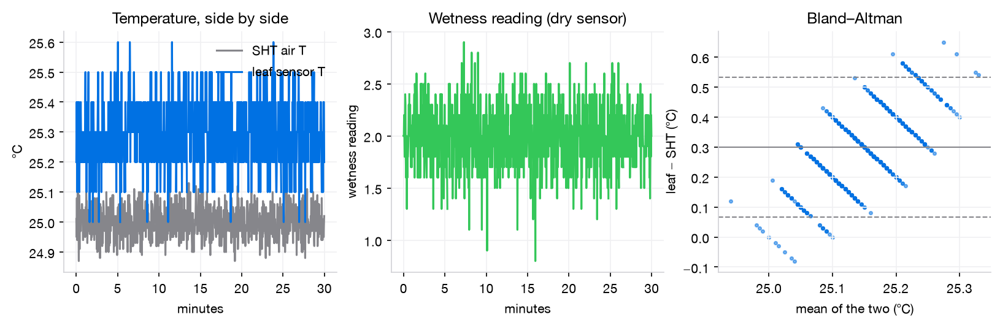
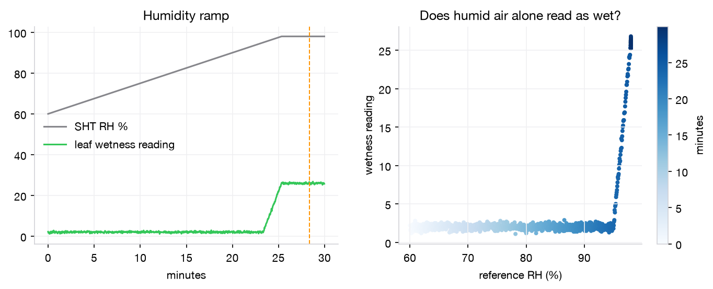
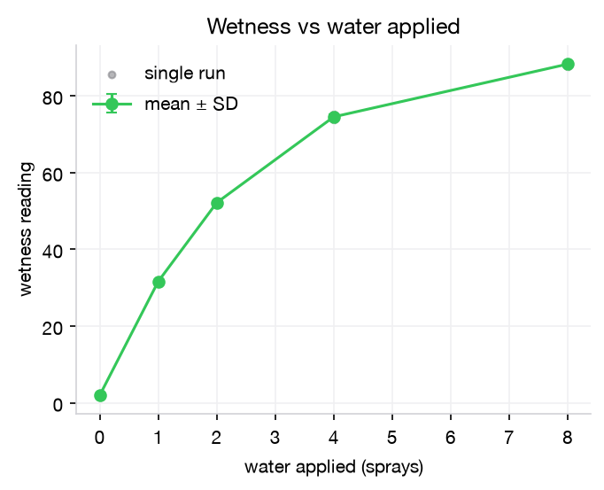
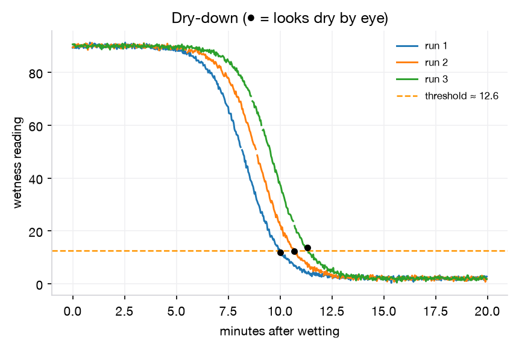
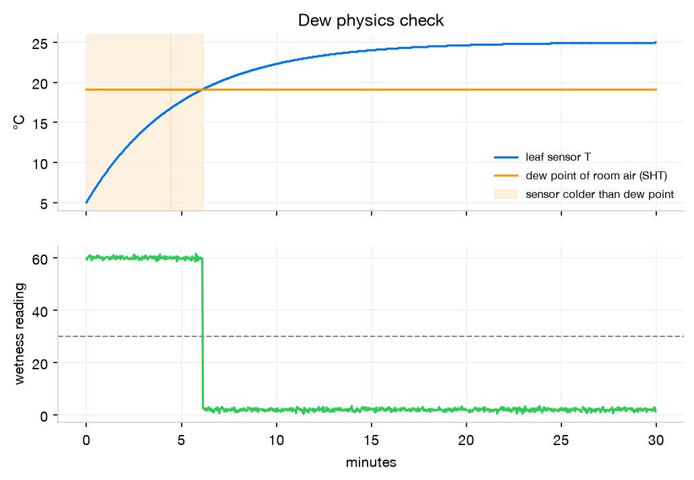
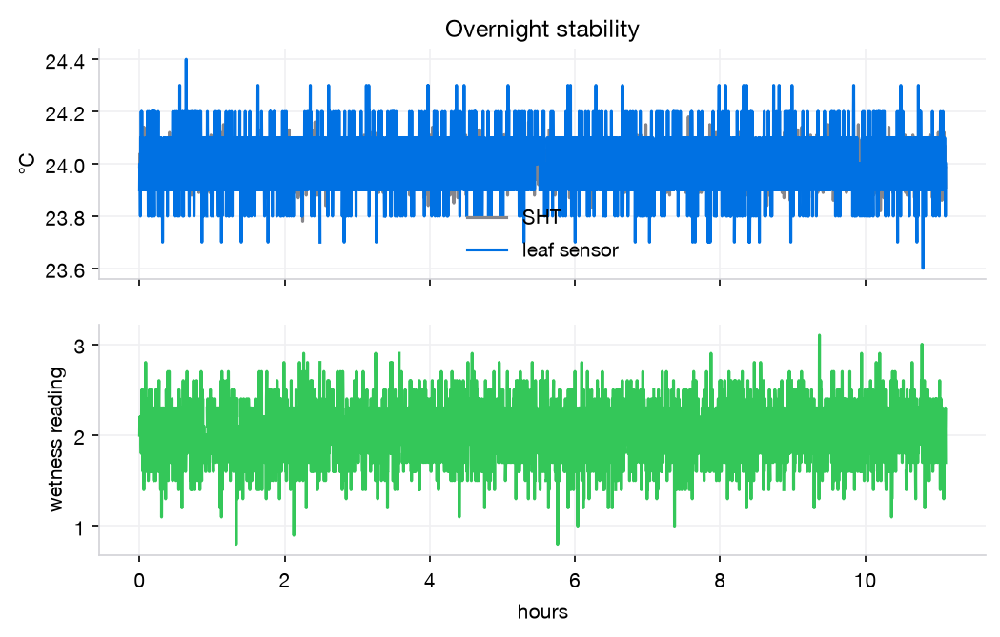

從開箱到 wiki 圖表，一天內完成。只在室內做：不焊接、不下田。照著順序做，每一步都有勾選框，進度會自動記住。 From unboxing to wiki figures in one day. Indoors only: no soldering, no field work. Follow the order. Every step has a checkbox, and your progress is saved in this browser.
這顆感測器量的是「仿葉片表面有沒有水膜」，不是空氣濕度。它的「葉面濕度 %」是電容讀數，沒有物理單位，所以必須自己校正出乾／濕的門檻。 This sensor measures whether a water film covers an artificial leaf. It does not measure air humidity. Its "leaf humidity %" is a unitless capacitance reading, so we have to calibrate our own wet/dry threshold.
兩筆訂單（造物人、環島科技）＋明天到貨的感測器＋實驗室已經有的東西。標籤告訴你今天用不用得到。 Two orders (造物人 and 環島科技), the sensor arriving tomorrow, and things already in the lab. The tag says whether you need it today.
主角。仿葉片電容格板＋溫度。Modbus RTU 輸出。明天到貨。The star. Capacitive artificial leaf + temperature, Modbus RTU output. Arrives tomorrow.
今天使用Use today大腦。用 1 片，另 1 片備用。有 WiFi，3.3 V 邏輯。The brain. Use one, keep one spare. WiFi, 3.3 V logic.
今天使用 1 片Use 1 todayESP32 插上去後，每支腳都有公排針，所以免焊。若有電壓跳帽，設 3.3 V。The ESP32 plugs in and every pin gets a male header, so no soldering. If it has a voltage jumper, set it to 3.3 V.
今天使用 1 片Use 1 today翻譯官：ESP32 的 UART ↔ 感測器的 RS485。A/B 端是螺絲端子。用 1 個。The translator between the ESP32 UART and the sensor's RS485. A/B are screw terminals. Use 1.
今天使用 1 個Use 1 today擴充板公針 ↔ RS485 模組公針、SHT 公針。剛好是母對母。Male header on the expansion board ↔ male pins on the RS485 module and SHT. F–F is exactly right.
今天使用Use today供電＋燒錄＋資料。若電腦只有 USB-C，需要轉接頭。Power, flashing and data. If the laptop only has USB-C ports, use an adapter.
今天使用Use today參考標準：空氣溫度與濕度，算露點用。先確認是 31 還是 40。The reference: air temperature and RH, used to compute dew point. Check whether it is a 31 or a 40.
實驗室已有In labC1、C4 用來把空氣濕度拉高。請用純水或蒸餾水，自來水會留白色粉末。Raises air humidity in C1 and C4. Use purified or distilled water; tap water leaves white dust.
實驗室已有In lab透明塑膠箱 10–30 L，蓋子挖一個孔讓加濕器的霧進去、線出來。Clear plastic box, 10–30 L. Cut one hole in the lid for the humidifier mist and the cables.
準備PrepareC2、C3 用來定量加水。若有微量吸管（pipette）更好，單位改成 µL。For dosing water in C2 and C3. A pipette is even better; switch the unit to µL.
準備PrepareC3 乾燥用電扇；C4 用冰箱把感測器冰到 4 °C；手機每分鐘拍一張。Fan for C3 drying; fridge to chill the sensor to 4 °C for C4; phone photo every minute.
準備Prepare電表量供電電壓；筆電裝 Arduino IDE ＋ Python 3。Multimeter to check supply voltage. Laptop with Arduino IDE + Python 3.
準備Prepare只有在感測器標示最低電壓 ≥ 7 V 時才需要（見規格卡）。實驗室若沒有要補買。Only needed if the sensor's minimum voltage is ≥ 7 V (see spec card). Buy one if the lab has none.
看規格決定Depends on spec備案。若 ESP32 一直讀不到，可換 UNO（5 V 系統，用 SoftwareSerial）。Plan B. If the ESP32 never gets a reply, switch to the UNO (5 V, SoftwareSerial).
備案Plan B今天不用：感測器裸線插麵包板接觸不穩，全部走螺絲端子。之後做 LED 示範可用。Not today: bare sensor wires are flaky in a breadboard, so everything goes through screw terminals. Useful later for an LED demo.
之後Later輸入 7–12 V，輸出 3.3/5 V。今天不需要：ESP32 已由 USB 供電。7–12 V in, 3.3/5 V out. Not needed today: the ESP32 is powered over USB.
備品Spare要焊接，之後做成永久版本時才用。Needs soldering. Only for a permanent version later.
之後Later之後做示範：綠燈 = 模型說「開綠光」、黃燈 = 葉面濕。需要 220 Ω 電阻。For a later demo: green = model says "green light on", yellow = leaf wet. Needs 220 Ω resistors.
之後Later感測器到貨後，先拍下標籤、說明書和線色，填下表。這張表會決定接線和程式設定，也是 wiki 的 F2。 When the sensor arrives, photograph the label, the manual and the wire colours, then fill this table. It decides the wiring and code settings, and it is wiki figure F2.
| 項目Item | 常見值（不一定對）Typical (may differ) | 我們的感測器Our sensor |
|---|---|---|
| 品牌／型號Brand / model | — | |
| 供電電壓範圍Supply voltage range | 5–30 V / 10–30 V DC | |
| 線色：V+ / GND / A / BWire colours: V+ / GND / A / B | 紅 / 黑 / 黃或綠 / 藍red / black / yellow or green / blue | |
| 鮑率（baud）Baud rate | 4800 / 9600 | |
| Modbus 位址Modbus address | 1 | |
| 暫存器 0x0000 是？Register 0x0000 is? | 葉面濕度 ×10leaf wetness ×10 | |
| 暫存器 0x0001 是？Register 0x0001 is? | 葉面溫度 ×10（有號）leaf temperature ×10 (signed) | |
| 標示精度（溫度／濕度）Stated accuracy (T / wetness) | ±0.5 °C / ±5 % | |
| 防水等級Ingress rating | IP67? |
輸入的內容只存在這台電腦的瀏覽器裡。最後請截圖或抄進 results/spec_card.md。What you type is saved only in this browser. Screenshot it or copy it into results/spec_card.md at the end.
杜邦線只接「公針 ↔ 公針」；感測器的裸線只鎖進螺絲端子。整個過程 USB 不要插電。Jumper wires join male pin to male pin only. Bare sensor wires go into screw terminals only. Keep USB unplugged the whole time.
| ESP32 | → | 接到goes to |
|---|---|---|
| 3V3 | → | RS485 VCC, SHT VIN |
| GND | → | RS485 GND, SHT GND, 感測器 GNDsensor GND |
| GPIO17 (TX2) | → | RS485 TXD |
| GPIO16 (RX2) | → | RS485 RXD |
| GPIO21 | → | SHT SDA |
| GPIO22 | → | SHT SCL |
| RS485 A+ / B− | → | 感測器 A / B（螺絲端子）sensor A / B (screw terminal) |
| 感測器 V+Sensor V+ | → | 5V 腳 或 12 V 正極（看規格卡）5V pin or 12 V + (spec card) |
RS485 模組用 3.3 V：這樣它回傳給 ESP32 的訊號也是 3.3 V。ESP32 的腳不耐 5 V。RS485 module on 3.3 V: its signal back to the ESP32 is then 3.3 V too. ESP32 pins are not 5 V tolerant.
共地：RS485 的 A/B 是差動訊號，但所有裝置的 GND 還是要接在一起，否則讀數會亂跳或完全沒反應。Common ground: A/B is differential, but every device's GND must still be joined, otherwise readings jump or never arrive.
TX→TXD？自動流向模組的標示方式各家不同。讀不到時，先對調 TX/RX，再對調 A/B。對調不會燒壞東西。TX→TXD? Auto-direction modules label pins differently. If there is no reply, swap TX/RX first, then A/B. Swapping is harmless.
程式不需要任何函式庫，開機會自動試 4800 → 9600 → 2400 → 19200 鮑率。The firmware needs no libraries. At boot it tries 4800, then 9600, 2400 and 19200 baud by itself.
# leafsensor bench logger
# SHT OK
# FOUND sensor: baud=4800 addr=1
ms,ok,r0,r1,sht_t,sht_rh
4012,1,0.0,26.3,26.12,58.40
6012,1,0.0,26.3,26.11,58.38cd leaf-sensor-bench
python3 -m pip install pyserial pandas matplotlib numpy
python3 tools/logger.py --test T0data/。While logging, type a marker and press Enter (e.g. dose 2); it is written into the next row. Ctrl+C stops, and the file lands in data/.依序做。每項做完立刻跑分析，確認圖對了再往下。右邊的圖是模擬示意，讓你知道大概長怎樣，不是真實數據。Do them in order, and run the analysis right after each one so you know the figure is right before moving on. Figures on the right are simulated examples of the expected shape, not real data.
目標：Target: 讀取成功率 ≥ 99%；溫度偏差在標示精度內；乾燥時濕度讀數雜訊（SD）小。read success ≥ 99 %; temperature bias within stated accuracy; small wetness noise (SD) when dry.

要看的：Look for: fog 之前，讀數要一直接近乾燥基線，就算 RH 到 90–95% 也一樣。如果 RH 90% 就讓讀數爬高，代表這顆會把「潮濕空氣」誤當成「濕葉」，門檻要設高一點。before fog the reading should stay near the dry baseline even at RH 90–95 %. If it climbs at RH 90 %, the sensor confuses humid air with a wet leaf, and the threshold must sit higher.

要看的：Look for: 讀數隨水量單調上升，並在某個劑量飽和；三次重複的 SD 小。the reading rises monotonically with water and saturates at some dose; small SD across the 3 repeats.

產出：Outputs: 門檻 ± SD（肉眼判斷變乾那一刻的讀數）、肉眼變乾的時間、乾到一半的時間。這個門檻就是之後所有「葉面濕潤時數（LWD）」的定義。threshold ± SD (the reading at the moment it looks dry), time to look dry, and time to half-dry. This threshold defines every later "leaf wetness duration (LWD)".

原理：田間的露水，是夜間葉面溫度降到空氣露點以下時形成的。我們把感測器冰到 4 °C 再拿出來，它會比室內空氣的露點還冷，表面就會結露；回溫超過露點後再變乾。這個測試不需要任何標準濕潤儀，只要 SHT 算出露點就能驗證。Principle: field dew forms when a leaf cools below the air's dew point at night. We chill the sensor to 4 °C and take it out. It is colder than the room's dew point, so dew forms; once it warms past the dew point, it dries. The SHT gives the dew point, so no reference wetness instrument is needed.
要看的：Look for: 「葉溫 < 露點」的時段和「讀數 > 門檻」的時段重疊；回溫越過露點後幾分鐘內變乾。報告一致率（%）和變乾延遲（分鐘）。the "leaf T < dew point" window overlaps the "reading > threshold" window, and it dries within minutes of crossing the dew point. Report agreement (%) and dry lag (min).

目標：Target: 上線率 ≥ 99%；乾燥讀數沒有明顯漂移；溫度偏差和 T0 一致。uptime ≥ 99 %; no visible drift in the dry reading; temperature bias matches T0.

8 張圖＋1 張總表，放在 Hardware／Measurement 頁，照 Design → Build → Test → Learn 的工程循環排。所有數字自動彙整在 results/summary.json。Eight figures and one summary table on the Hardware / Measurement page, ordered Design → Build → Test → Learn. Every number is collected automatically in results/summary.json.
組裝第 8 步的照片，配上本頁的接線圖。Photo from assembly step 8 next to this page's diagram.
廠商標示 vs 我們實測。Manufacturer claims vs what we measured.
溫度偏差與 95% 一致性界限。Temperature bias and 95 % limits of agreement.
葉面乾時，讀數對 RH 的關係。Reading vs RH while the leaf is dry.
水量 → 讀數，n = 3。Water applied → reading, n = 3.
LWD 的操作型定義來源。Where our operational definition of LWD comes from.
葉溫 < 露點 ⇔ 濕。最有說服力的一張。Leaf T < dew point ⇔ wet. The most convincing figure.
上線率、漂移。Uptime and drift.
| 指標Metric | 來源From | 目標Target | 結果Result |
|---|---|---|---|
| 讀取成功率／上線率Read success / uptime | T0, T5 | ≥ 99 % | |
| 溫度偏差 ± LoATemperature bias ± LoA | T0 | 在標示精度內within stated accuracy | |
| 乾燥讀數雜訊 SDDry-reading noise SD | T0 | (threshold − dry) ≥ 5 × SD | |
| RH ≥ 90% 時乾葉最大讀數Max dry-leaf reading at RH ≥ 90 % | C1 | < threshold | |
| 飽和劑量；重複 SDSaturating dose; repeat SD | C2 | 單調、SD 小monotonic, small SD | |
| 乾／濕門檻 ± SDWet/dry threshold ± SD | C3 | — | |
| 肉眼變乾時間Time to look dry | C3 | — | |
| 露點一致率；變乾延遲Dew agreement; dry lag | C4 | ≥ 90 %; 數分鐘內a few min | |
| 讀數漂移Reading drift | T5 | ≈ 0 /h≈ 0 /h |
把整個 data/、figures/、results/ 資料夾，加上 C3 的手機照片，壓縮後交給老師。有 repo 權限的話直接 commit。原始 CSV 不要刪、不要手改。Zip the whole data/, figures/ and results/ folders plus the C3 phone photos and hand them to the instructor, or commit them if you have repo access. Never delete or hand-edit raw CSVs.
縣級產量模型裡，濕度類變數的貢獻幾乎為零（暖夜、高濕日都沒通過置換檢定）。所以葉面濕潤不會變成產量回歸的新欄位，而是在即時運算端提供兩種新資訊。In the county yield model, humidity-type variables contribute almost nothing (warm nights and humid days failed permutation tests). So leaf wetness does not become a new column in the yield regression. It adds two new pieces of information on the real-time side.
ERA5 的 Tmax 偏低，≥35 °C 時數大約少算一半。現場溫度可以直接修正熱逆境項。這需要田間資料，屬於未來工作。ERA5 runs low on Tmax and undercounts hours ≥ 35 °C by about half. Field temperature corrects the heat term directly. Needs field data: future work.
葉面濕潤本身不是非生物逆境，而是稻熱病的感染條件。所以另開一條「生物性」子壓力，用病害資料驗證，不併進產量模型。C3 定出的門檻就是這條通道的開關。Wetness is not an abiotic stress; it is the infection condition for rice blast. So it becomes a separate biotic sub-stress, validated on disease data, not yield. The C3 threshold is this channel's switch.
參考：Sugawara & Kobayashi 2021（稻葉濕潤感測器，水平安裝、直方圖定門檻）；BLASTAM（Koshimizu 1988，濕潤時數 × 溫度）；Sentelhas 等（濕潤感測器的安裝與校正）。References: Sugawara & Kobayashi 2021 (rice leaf-wetness sensor, horizontal mount, histogram threshold); BLASTAM (Koshimizu 1988, wetness hours × temperature); Sentelhas et al. (wetness sensor deployment and calibration).
| 症狀Symptom | 依序試Try in order |
|---|---|
# NO REPLY | ① 電表量感測器 V+ 對 GND 的電壓，是否在規格內 ② 所有 GND 是否共地 ③ 對調 GPIO16/17 兩條線 ④ 對調 A/B ⑤ 規格卡的位址若不是 1，改 MODBUS_ADDR ⑥ 換另一個 RS485 模組（有 3 個）① Multimeter: sensor V+ to GND within spec? ② All grounds joined? ③ Swap the GPIO16/17 wires ④ Swap A/B ⑤ If the address is not 1, set MODBUS_ADDR ⑥ Try another RS485 module (there are 3) |
# SHT NOT FOUND | 檢查 SDA=21、SCL=22 有沒有接反；SHT_MODEL 是否正確；SHT 的 VIN 接 3V3。Check SDA = 21 and SCL = 22 aren't swapped, SHT_MODEL is right, and SHT VIN is on 3V3. |
| 連接埠找不到No serial port | 換一條確定能傳資料的線（有些 USB 線只能充電）；Mac 舊系統可能要裝 CH340 驅動；關閉 Serial Monitor 再跑 logger。Try a cable known to carry data (some only charge). Older macOS may need the CH340 driver. Close Serial Monitor before running the logger. |
| 上傳卡在 Connecting…Upload stuck at Connecting… | 上傳時按住 BOOT 鍵 2 秒。Hold BOOT for 2 s during upload. |
ok 偶爾是 0ok sometimes 0 | 偶爾 1–2% 正常。若很頻繁，代表接觸不良：重新鎖緊端子、換杜邦線，並把 A/B 兩條線互相絞在一起。1–2 % is normal. If frequent, a contact is bad: re-tighten terminals, swap jumpers, twist the A/B pair together. |
| 溫度數值很怪（例如 6553）Odd temperature (e.g. 6553) | 暫存器的縮放或順序不同，對照說明書修改 REG_START／REG_COUNT 或 config 的欄位對應。Register scaling or order differs. Check the manual and adjust REG_START / REG_COUNT or the config mapping. |
| 完全卡住Totally stuck | 拍下接線照片、序列埠輸出、規格卡，傳到群組。不要在接著 12 V 的情況下亂換線。Post a photo of the wiring, the serial output and the spec card to the group. Don't move wires around while 12 V is connected. |